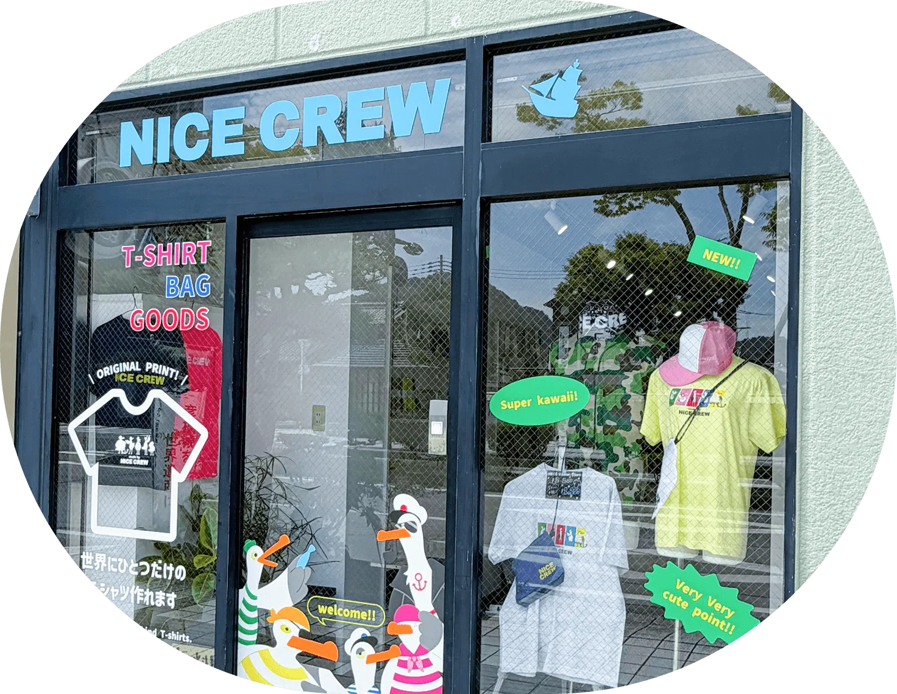
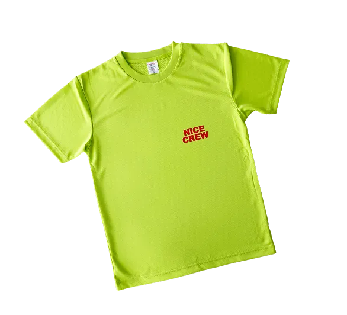
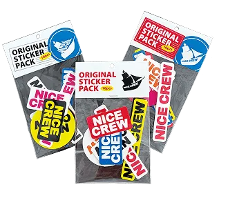
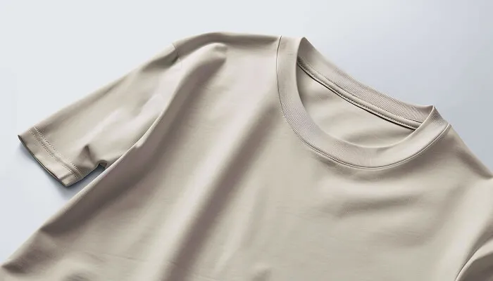
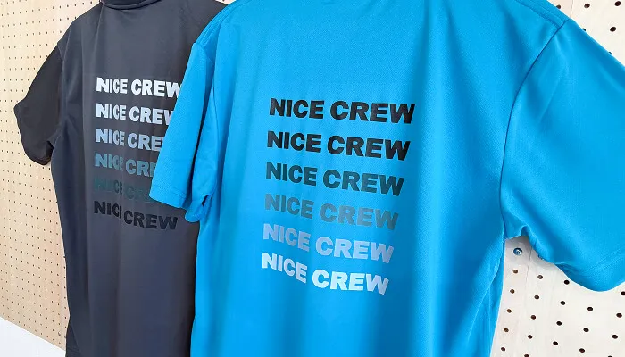
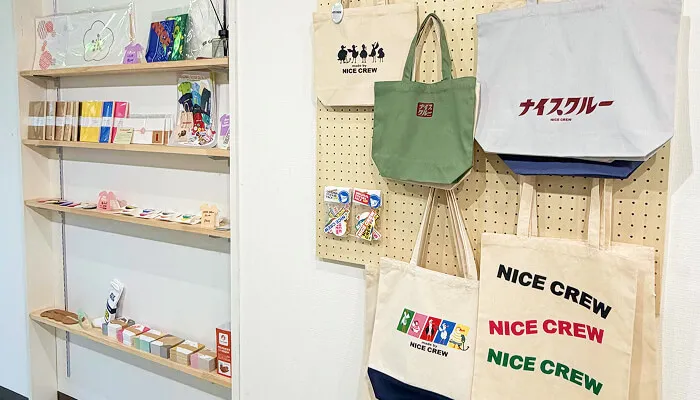
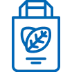
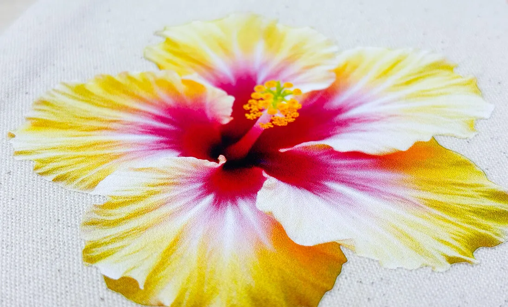

こんなお悩みはありませんか?
-
オリジナルグッズを作りたいけど、
どうやって形にしたらいいか
わからない… -

実際にサンプルを確認してから
オリジナルウェアを
作りたい… -
専門知識がなくて、
何から始めればいいのか
わからない…
NICE CREWで
できること
-
その場でプロに相談・
注文できる！ デザインが決まっていなくても、スタッフと相談しながらオリジナルグッズ制作を進められます。
-

実物を見て、さわって選べる！
DTF印刷やオリジナルグッズの仕上がりを、実際に手に取って質感を確認できます。
-

幅広いアイテムに対応！
Tシャツやパーカー、トートバッグなど、豊富なアイテムへのDTF転写プリントに対応。用途に合わせて選べます。
NICE CREWの
4つの機能
-
オリジナルウェア印刷
オリジナルウェアへのDTF転写プリントのご相談・ご注文はNICE CREWにおまかせください。
実物サンプルを見ながら、その場でご相談いただけます。 -
お客さまのグッズ制作を
受注オーダーメイドのオリジナルグッズ制作を、企画からご相談いただけます。
-
NICE CREW
オリジナル商品の販売NICE CREWオリジナルの商品を、店頭でそのままお買い求めいただけます。

-
彦根経済新聞サテライト・
地域の拠点取材・広報のご相談窓口を兼ね、地域の皆さまが集まり何かを生み出せる場所を目指しています。
お問い合わせ・
ご相談はこちら！
-
お問い合わせフォームから
-
公式LINEからお気軽に！
PRINTING METHOD プリント方式について
-

DTF転写プリントによる
高精細な仕上がりNICE CREWでは、フィルムへの転写を経て高精細に仕上げる「DTF印刷」という方式を採用しています。
専用インクや加工の詳細は、DTF印刷ページでご確認いただけます。